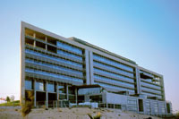

2003 - 2013 : OHIM - Alicante
The Office for Harmonization in the Internal Market (OHIM) registers Community Trade Marks and Community Designs.
The Community Trade Mark and the Community Design both grant their proprietors a uniform right valid in all Member States of the European Union by means of one procedural system, which is implemented in two IT-systems: EUROMARC and EURODESIGN.
EURODESIGN is a custom-made software tool used by the Office to examine Community Designs (RCD) applications. It also serves as the Register of RCDs (held exclusively in electronic form) and is a web-based technology program.
A registered Community design (RCD) is an exclusive right for the outward appearance of a product or part of it. A RCD initially has a life of five years that can be renewed in blocks of five years up to a maximum of 25 years. The fact that the right is registered constitutes an important feature as it gives it greater certainty and solidity in case of infringements.
Infeurope acted as IT service provider from 2001 to 2007 on the maintenance and evolution of EUROMARC and was in parallel charged with the process of building the new system EURODESIGN. We were responsible for the development, integration and testing of EURODESIGN.
Since October 2004, I moved to Alicante to work in the client's premises, a highly international and multicultural environment. Being on site, I had frequent contacts with end-users. I participated in the Java/J2EE development, especially for the integration with other modules and writing test cases.